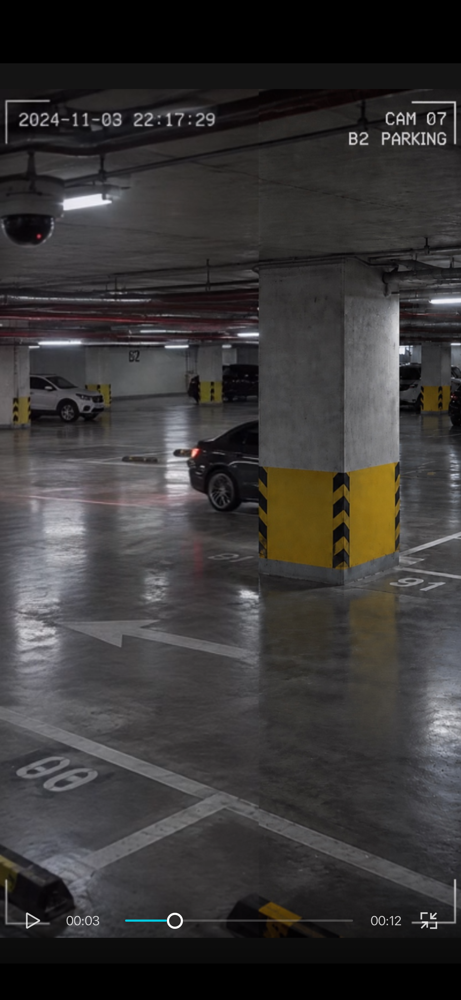
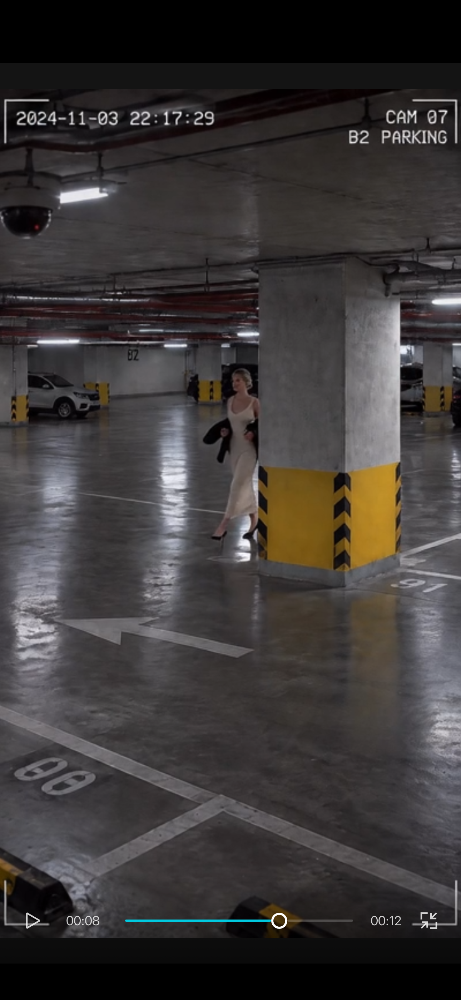

PANIC OPERATOR ARCHIVE
The Car Did Not Come Back
Public fragment / FILE 021
This page holds the public video, two selected stills, and a short case log. The fuller evidence record and operator close belong to the sealed tray on Patreon.
Fragment only. Source overlay and player positions are not a verified facility clock.
01 / Case log
A dark sedan approaches the central support column in B2 Parking. Its rear is briefly visible at the obstruction. The supplied sequence does not show the car emerging. Another vehicle approaches the same blind area. The view does not establish what lies immediately behind the column.
02 / Selected evidence

The blind area
The sedan's rear remains visible to the left of the support column. The frame cannot show its path through the concealed space.

A later arrival
A woman becomes visible beside the same obstruction. The image does not establish where she was immediately before this frame.
03 / Operator notes
- CAM / PLACE: CAM 07 / B2 PARKING, as labeled in the supplied frames.
- TIME: overlays display November 3, 2024; synchronization is unverified.
- CONTINUITY: the first sedan's continuation is not visible in the supplied sequence.
- COMPARISON: a white SUV later approaches the same obstruction.
- BLIND AREA: no second camera shows the space behind the column.
- OPEN QUESTION: did the sedan leave along a route hidden from this camera?
- Remaining plates and close: sealed tray.